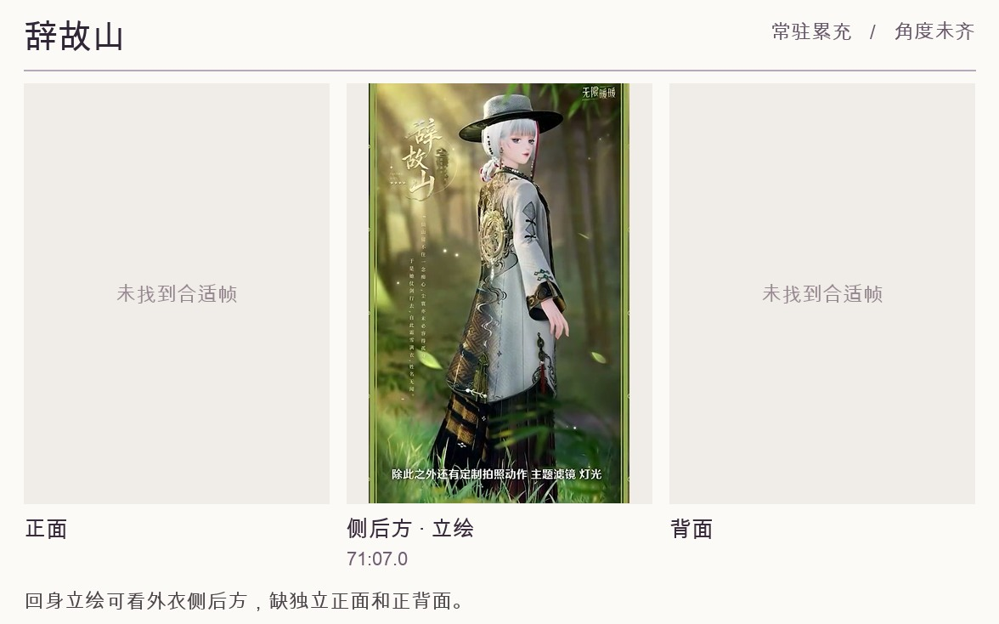

辞故山
奇珍纪行 · 指定付费行为累积收藏值，按等级领取。前瞻以立绘展示。
原色、进化与焕新
配色说明出处 ↗
角度参考
角度未齐 · 点图可放大

- 正面 未找到合适帧
- 侧面 侧后方 · 立绘 71:07.0
- 背面 未找到合适帧
视频
原片选段 71:05.4 – 71:09.4 · 高清选段 · 保留原声
奇珍纪行 · 指定付费行为累积收藏值，按等级领取。前瞻以立绘展示。
角度未齐 · 点图可放大

原片选段 71:05.4 – 71:09.4 · 高清选段 · 保留原声